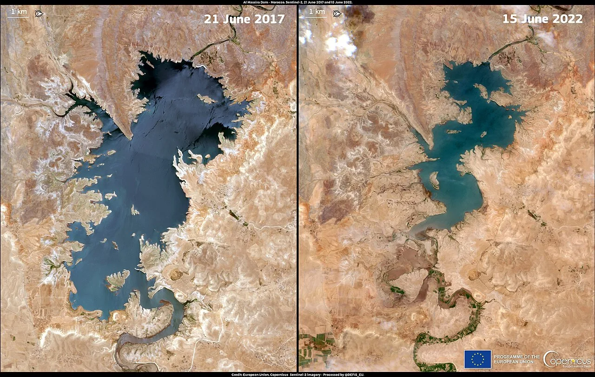

저수지는 도시의 시간표입니다

물 부족은 어느 날 갑자기 수도꼭지가 마르는 사건으로 시작되지 않습니다. 저수지 수위가 낮아지고, 지하수 사용이 늘고, 농업용수 배분이 바뀌고, 도시가 제한 급수 가능성을 검토하면서 천천히 드러납니다. 그래서 물 부족을 볼 때 강수량만 보면 부족합니다. 도시가 물을 얼마나 잃고 있는지, 누수율이 얼마나 높은지, 요금 체계가 절약을 유도하는지도 함께 봐야 합니다.
기후변화는 가뭄의 빈도와 강도를 키우지만, 실제 갈등은 관리 체계에서 커집니다. 같은 가뭄이라도 누수율이 낮고 재이용 시설이 있는 도시는 버틸 시간이 깁니다. 반대로 낡은 관망과 낮은 요금, 무분별한 지하수 사용이 겹치면 비가 적게 온 해에 바로 위기가 됩니다. 물 부족 외교의 출발점은 국제회의가 아니라 도시 배관과 계량기입니다.
농업과 도시는 같은 물을 봅니다
물 배분에서 가장 어려운 지점은 농업과 도시가 같은 수원을 바라본다는 점입니다. 농업은 식량과 생계의 문제이고, 도시는 생활과 산업의 문제입니다. 가뭄이 길어지면 어느 쪽을 줄일지 결정해야 합니다. 이때 물은 경제재이면서 정치재가 됩니다. 가격만으로 배분하면 취약한 농가가 무너지고, 정치적 배분만으로 결정하면 도시와 산업이 흔들립니다.
농업용수 효율을 높이는 기술은 중요하지만 만능은 아닙니다. 작물 전환, 관개 방식, 저장 시설, 지하수 규제, 보상 체계가 함께 움직여야 합니다. 물 부족이 심한 지역에서는 농산물 가격과 이주 문제까지 연결됩니다. 한 지역의 가뭄이 식량 수입국의 물가와 외교 관계로 번지는 이유입니다.
강은 국경선을 따르지 않습니다
국경을 넘는 강에서는 물 부족이 외교 문제가 됩니다. 상류 국가가 댐을 짓거나 취수량을 늘리면 하류 국가는 농업, 식수, 전력 생산에 영향을 받습니다. 비가 충분할 때는 협상이 느슨해도 버틸 수 있지만, 가뭄이 오면 오래된 합의의 빈틈이 드러납니다. 물 부족 외교는 영토 분쟁처럼 보이지 않아도 생활을 직접 흔드는 안보 의제입니다.
좋은 합의는 평균 유량이 아니라 나쁜 해의 규칙을 정합니다. 가뭄 단계별 방류량, 공동 관측소, 실시간 데이터 공개, 분쟁 조정 절차가 있어야 합니다. 서로 다른 통계를 들고 협상하면 불신이 먼저 커집니다. 그래서 위성 관측과 수문 데이터 공유가 물 외교의 핵심 인프라가 됩니다.
적응 비용은 수도요금에 숨어 있습니다
도시가 물 부족에 적응하려면 돈이 듭니다. 해수 담수화, 하수 재이용, 누수 관망 교체, 빗물 저장, 스마트 계량기, 지하수 모니터링은 모두 장기 투자입니다. 문제는 이 비용이 수도요금과 세금에 반영될 때 정치적 저항이 생긴다는 점입니다. 물은 싸야 한다는 인식과 안정적 공급에는 비용이 든다는 현실이 부딪힙니다.
앞으로 물 부족을 읽을 때는 가뭄 뉴스보다 투자 계획을 봐야 합니다. 어느 도시가 누수율을 낮추고 있는지, 산업단지가 재이용수를 쓰는지, 농업 보상 체계가 있는지, 국경 하천 데이터가 공개되는지입니다. 물 부족은 자연재해이지만 피해 규모는 관리 능력이 결정합니다. 물 외교의 가장 현실적인 출발점은 물을 덜 잃는 도시입니다.
수도꼭지 뒤에는 오래된 계약이 있습니다
물 부족은 비가 적게 와서 생기는 문제로만 보이지만, 실제 갈등은 사용권에서 더 자주 시작됩니다. 농업용수, 산업용수, 생활용수가 같은 강과 저수지를 나눠 쓰기 때문입니다. 가뭄이 길어지면 도시가 먼저 물을 가져가야 하는지, 농가가 우선인지, 발전소 냉각수는 어떻게 할지 같은 질문이 정치 문제가 됩니다.
도시는 누수율을 줄이는 것만으로도 큰 물을 확보할 수 있습니다. 오래된 관로에서 새는 물은 댐을 새로 짓지 않고도 줄일 수 있는 손실입니다. 하지만 관로 교체는 눈에 잘 보이지 않고 예산도 많이 듭니다. 시장과 중앙정부가 임기 안에 성과를 보여주기 어렵기 때문에 투자가 뒤로 밀리는 일이 많습니다.
국가 간 협력에서는 데이터 공유가 중요합니다. 강 상류와 하류 국가가 강수량, 저수량, 방류량을 서로 믿지 못하면 작은 가뭄도 외교 갈등으로 번집니다. 특히 식량 수입 의존도가 큰 국가는 물 부족이 곡물 가격과 이주 문제로 이어질 수 있어 더 민감하게 반응합니다.
민간 기업도 물 리스크에서 자유롭지 않습니다. 반도체, 배터리, 식품, 섬유 같은 산업은 물을 많이 쓰거나 깨끗한 물이 필요합니다. 공장이 들어설 지역의 물 공급이 불안하면 생산 비용과 주민 갈등이 동시에 커집니다. 기업의 지속가능성 보고서에서 물 사용량과 재활용률을 따로 봐야 하는 이유입니다.
결국 물 외교는 거대한 댐 사진보다 생활권의 작은 숫자에서 출발합니다. 누수율, 지하수 수위, 농업용수 가격, 하수 재이용률, 도시별 제한 급수 일수를 보면 위험이 먼저 보입니다. 물은 국경을 넘지만, 갈등은 대개 동네 수도관과 농지에서 먼저 시작됩니다.
관련 영상
물은 국경을 모른다? 한국과 중앙아시아의 스마트 물관리 협력 이야기
물 부족은 먼 나라의 환경 뉴스로 끝나지 않습니다. 식량 가격, 에너지 생산, 도시 투자, 외교 협상에 동시에 들어갑니다. 강수량보다 관리 체계가 더 중요한 이유입니다.
물 부족을 이해하려면 지도 위의 강보다 도시의 수도요금 고지서와 농촌의 관개 일정을 함께 봐야 합니다. 같은 물을 누가 먼저 쓰는지 정하는 순간 외교와 지역 정치가 만납니다. 기후 변화가 강수 패턴을 흔들수록 오래된 물 배분 계약은 더 자주 시험대에 오릅니다. 그때 필요한 것은 거창한 선언보다 정확한 계량기와 공개된 데이터입니다. 저수율, 누수율, 재이용률, 산업용수 사용량이 정기적으로 공개되면 갈등은 줄어듭니다. 숨겨진 물 부족은 어느 날 갑자기 가격과 이주 문제로 나타납니다.
가장 위험한 순간은 물이 완전히 부족해진 뒤가 아니라 부족하다는 사실을 서로 다르게 해석할 때입니다. 상류 지역은 저장이 필요하다고 말하고, 하류 지역은 방류가 줄었다고 의심합니다. 도시는 생활용수를 우선해야 한다고 주장하고, 농가는 작물이 말라가고 있다고 호소합니다. 이 갈등을 줄이려면 평상시 자료가 쌓여 있어야 합니다. 위기가 닥친 뒤 숫자를 만들면 누구도 쉽게 믿지 않습니다.
물 문제는 위기가 닥치면 갑자기 국제 뉴스가 되지만 해결은 오래된 관로와 사용 규칙에서 시작됩니다. 거대한 외교 문장보다 매일 새는 물을 줄이는 일이 더 실질적인 평화 장치가 될 수 있습니다.